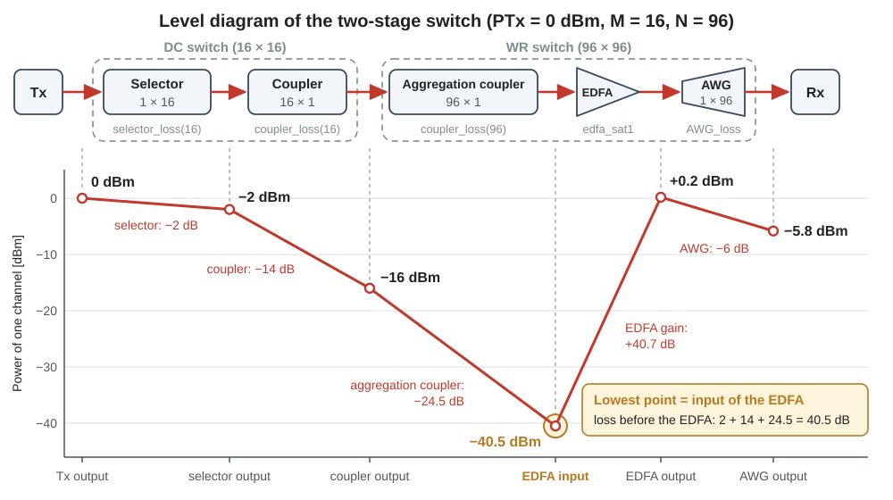
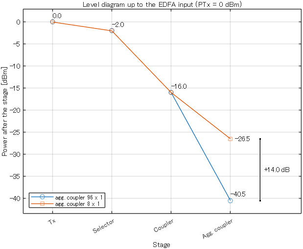

Background
12Units and power budget
Almost every optical quantity in this project is a power in dBm or a loss in dB. This page shows how to convert between watts, dBm and dB, what a loss in dB does to the optical field of the simulation, how much loss a selector, a coupler and a DC switch have, and how these losses add up to the power budget of a switch.
matlab/demos/demo12_units_power_budget.mLibrary: attenuation, set_signal_power, calc_signal_power, coupler_loss, selector_loss, DCS_loss, plot_level_diagram1. Why you need this
In the practice chapters every signal was normalized: the symbol energy was 1, and you chose the SNR. In a switch nobody chooses the SNR. The transmitter sends a certain power, every optical element on the path removes a part of it, and the optical amplifier adds noise. The less power arrives at the amplifier, the more this noise disturbs the signal. The SNR at the receiver is the result.
The research asks how many ports the switch can have. A switch with more ports needs larger elements, and larger elements have more loss. The port count is therefore limited by a power budget: the list of the power of a signal after every element on its path, from the transmitter to the receiver. After this page you can write this list by hand and compare it with the simulation.
A power is an absolute quantity and is written in dBm. A loss or a gain is a ratio and is written in dB. In these units, the power after a chain of elements is the power before it minus the sum of the losses.
The loss rules of section 4 and the level diagram of section 5 follow one paper. This page calls it the JLT paper.
- Mitsuya et al., "Three-Stage Optical Circuit Switch Architectures for Intra-Datacenter Networking," J. Lightw. Technol., vol. 43, no. 2, pp. 400-407, 2025 (doi 10.1109/JLT.2024.3465208)
2. Watt, dBm and dB
The powers in a switch differ by many orders of magnitude. A transmitter sends about 1 mW, and less than 1 µW of it can arrive at the amplifier. A logarithmic unit keeps such numbers short. The power \(P\) is compared with 1 mW, and ten times the logarithm of this ratio is the power in dBm:
An optical element passes only a part of the power that enters it. Its loss is the ratio of the input power \(P_{\mathrm{in}}\) to the output power \(P_{\mathrm{out}}\). Ten times the logarithm of this ratio is the loss in dB (decibel):
dBm is the unit of a power, and dB is the unit of a ratio. A gain is a loss with a negative sign: an amplifier with a gain of 40 dB has a loss of -40 dB.
The logarithm turns a ratio into a difference. By Eq. (1) and Eq. (2), the output power in dBm is the input power in dBm minus the loss in dB. For \(n\) elements one after the other, the losses add:
This is the reason for the two units: a chain of elements becomes a subtraction.
| Value | in dB: a factor of | in dBm: a power of |
|---|---|---|
| -30 | 1/1000 | 1 µW |
| -10 | 1/10 | 0.1 mW |
| -3 | 1/2 | 0.5 mW |
| 0 | 1 | 1 mW |
| 3 | 2 | 2 mW |
| 10 | 10 | 10 mW |
| 20 | 100 | 100 mW |
The rows for -3 and 3 are rounded: 3 dB is a factor of 1.995, and a factor of 2 is 3.01 dB. Other values follow from the table, because adding values in dB multiplies the ratios:
- 13 dB = 10 dB + 3 dB is a factor of 10 × 2 = 20.
- 17 dBm = 20 dBm - 3 dB is 100 mW / 2 = 50 mW.
- -40 dBm = -30 dBm - 10 dB is 1 µW / 10 = 0.1 µW.
One ratio of this project is not round. The switch uses 96 wavelength channels, that is 96 laser frequencies on a fixed grid (\(N = 96\), N in the scripts). A factor of 96 is \(10\log_{10} 96 = 19.8\) dB.
Several signals in one fiber: add the powers in watts
Equation (3) follows one signal through elements one after the other. It does not apply when several signals are in the same fiber at the same time. Their powers add, and powers add in watts.
An example from this project: the optical amplifier of the switch, an erbium-doped fiber amplifier (EDFA, page 15), has a total output power of 20 dBm = 100 mW. This is its saturation output power \(P_{\mathrm{sat}}\) (edfa_sat1 = 20 in the scripts). In the model, the 96 wavelength channels share this power equally, so each channel gets 100 mW / 96 = 1.042 mW. In dB the division is a subtraction: 20 dBm - 19.82 dB = 0.18 dBm, which is about 0.2 dBm.
Now read the example backward. One fiber carries 96 channels of 0.18 dBm each. Their total power is 96 × 1.042 mW = 100 mW = 20 dBm. The sum of the 96 values in dBm, 96 × 0.18 = 17.3, has no meaning.
Never add two powers in dBm. Two signals of 0 dBm together have 2 mW = 3 dBm. Convert to watts, add, and convert back. For \(n\) signals of equal power there is a short way: add \(10\log_{10} n\) dB to the power of one signal. The only thing that you may add to a power in dBm is a ratio in dB.
In the code. The scripts keep powers in dBm and losses in dB. They convert to watts only where powers are added. Section 2 of the demo writes the two directions of Eq. (1) as follows. The factors 1e-3 and 1e3 change between W and mW.
P_W = 1e-3*10.^(P_dBm/10); % dBm -> W
P_back = 10*log10(P_W*1e3); % W -> dBmThe division of the amplifier power among the channels is one subtraction in the demo: ch_dBm = edfa_sat1 - 10*log10(N). The two-stage and the three-stage scripts divide the output power of the EDFA among its channels with the same term: - 10*log10(N) in step22_three_stage_one_point and - 10*log10(N_agg) in step21_two_stage_one_point.
3. Field and power
The simulation does not store the power of a signal. It stores the optical field: the complex envelope that you know from the practice chapters, as a column vector of samples. In the practice chapters the envelope was normalized. Here it has a physical unit, \(\sqrt{\mathrm{W}}\), so that the squared magnitude of a sample is a power in watts. The power of a signal with the samples \(x_1, \dots, x_n\) is the mean of these squared magnitudes:
By Eq. (2), an element with a loss of \(L\) dB multiplies the power by \(10^{-L/10}\). The power is the square of the field, so the element multiplies every sample of the field by the square root of this factor:
The number \(a\) is the amplitude factor. Two examples: a loss of 3 dB multiplies the power by 0.5012 and the field by 0.7079, which is close to \(1/\sqrt{2}\). A loss of 20 dB multiplies the power by 0.01 and the field by 0.1.
Divide the value in dB by 10 for a power and by 20 for a field. If you multiply a field by \(10^{-L/10}\), its power falls by \(2L\) dB.
In the code. Three library functions handle power and loss (Table 2). A signal is a column vector, and a matrix holds one signal per column.
| Call | Inputs | Output |
|---|---|---|
signal_power_dB = calc_signal_power(signal_w) | field [sqrt(W)] | mean power of each column [dBm]: Eq. (4), then Eq. (1) |
signal = set_signal_power(signal_data, power_dB) | waveform on any scale; wanted mean power [dBm] | the same waveform, scaled to this power [sqrt(W)] |
[y, att] = attenuation(x, loss) | field [sqrt(W)]; loss [dB], where a negative value is a gain | field after the loss [sqrt(W)]; amplitude factor \(a\) of Eq. (5) |
- The names
power_dBandsignal_power_dBcome from the earlier laboratory code. Their unit is dBm. set_signal_powerchanges only the scale of the waveform. The shape and the phase stay the same. The transmitter functionTL_QAM(page 13) ends with this call: this is where the transmitter power enters the simulation.calc_signal_powermeasures everything that the vector contains, as a power meter does: the signal, and also noise and crosstalk (light that leaks in from other signals, page 16) once a script has added them.- For a matrix,
calc_signal_powerreturns one value per column, andpower_dBorlosscan be a row vector with one value per column. A signal that is a row vector stops the two power functions with an error, for examplecalc_signal_power: signal_w is a row vector. Signals must be column vectors.
You can try the three functions in the Command Window after setup_path:
x = randn(1000, 1) + 1i*randn(1000, 1); % any complex field, as a column vector
x = set_signal_power(x, 0); % scale it to 0 dBm = 1 mW
y = attenuation(x, 24.5); % a loss of 24.5 dB
calc_signal_power(y) % ans = -24.50004. Loss rules of the elements
The space switches of this project are built from two elements, the selector and the coupler (page 11). The JLT paper gives each element a loss that depends only on its number of ports, and the code uses the same rules. This page writes \(D\) for the number of ports of one element, as the JLT paper does. The letters \(M\) and \(N\) stay reserved for the sizes of the switches.
- A \(1 \times D\) selector is a switch that connects its single port to one of \(D\) ports. It is a tree of \(1 \times 2\) switch elements. The light passes one element in each stage of the tree, that is \(\lceil \log_2 D \rceil\) elements, and loses 0.5 dB in each.
- A \(D \times 1\) coupler is a passive element: it has nothing to control, and it adds the light of all \(D\) inputs into one output. It is a tree of \(2 \times 1\) couplers with \(\lceil \log_2 D \rceil\) stages. A \(2 \times 1\) coupler passes only half of the power of each input. This loss of 3 dB is the splitting loss, and it cannot be avoided. A real coupler loses 0.5 dB more, which is its excess loss. Each stage therefore costs 3.5 dB.
- A \(D \times D\) delivery-and-coupling (DC) switch has a \(1 \times D\) selector at every input port and a \(D \times 1\) coupler at every output port. A signal passes one selector and one coupler.
The brackets \(\lceil\ \rceil\) mean rounding up to the next integer. In MATLAB this is ceil.
| Element | Loss per stage | Loss [dB] | \(D = 16\) | \(D = 96\) | Function |
|---|---|---|---|---|---|
| \(1 \times D\) selector | 0.5 dB | \(0.5\,\lceil \log_2 D \rceil\) | 2 dB | 3.5 dB | selector_loss(D) |
| \(D \times 1\) coupler | 3.5 dB = 3 dB + 0.5 dB | \(3.5\,\lceil \log_2 D \rceil\) | 14 dB | 24.5 dB | coupler_loss(D) |
| \(D \times D\) DC switch | 4 dB = 0.5 dB + 3.5 dB | \(4\,\lceil \log_2 D \rceil\) | 16 dB | 28 dB | DCS_loss(D) |
Every doubling of \(D\) costs 0.5 dB in a selector and 3.5 dB in a coupler. In power, 0.5 dB leaves 89% and 3.5 dB leaves 45%. A 96 × 1 coupler with its 24.5 dB leaves 1/282 of the power. The couplers, not the selectors, use up the power budget of a switch.
Rounding up: 96 inputs cost as much as 128
The number of stages is rounded up. A tree for 96 inputs needs 7 stages, because \(\log_2 96 = 6.58\), and a tree for 128 inputs needs 7 stages too. Both couplers cost 7 × 3.5 = 24.5 dB. The loss is a staircase: every coupler with 65 to 128 inputs costs 24.5 dB, and a coupler with 64 inputs costs 21 dB.
This rounding is a deliberate choice of the model, and it is conservative: the model does not underestimate the loss. The splitting loss of seven stages halves the power seven times. This is a division by 128, or 21 dB, although the coupler has only 96 inputs and a division by 96 is 19.8 dB. The JLT paper sets the coupler that collects the 96 wavelength channels to 24.5 dB, and the code keeps this value. Remember the staircase when you compare coupler sizes that are not powers of two.
In the code. Each rule is one library function (last column of Table 3). The function takes the number of ports and returns the loss in dB. The number of ports can be a vector. It must be an integer of at least 1: coupler_loss(1) is 0 dB, and coupler_loss(0) stops with an error. The help texts call the argument M or N; it is the \(D\) of this page.
These functions only return a number. A signal loses power when a script passes this number to attenuation. In step21_two_stage_one_point, the coupler before the EDFA is these three lines:
agg_coupler_loss = coupler_loss(N_agg);
signal = attenuation(signal, agg_coupler_loss);
stage_power(4) = calc_signal_power(signal);The first line calculates the loss from the number of inputs N_agg. The second line applies it to the field. The third line measures the power after the element. The main scripts write every switch and every coupler in this pattern.
5. The level diagram
A level diagram shows the power of a signal after every element of its path. It is the power budget as a picture. Figure 1 is the level diagram of the two-stage switch of page 11. A signal first passes a DC switch of size \(M \times M\) and then a wavelength-routing (WR) switch of size \(N \times N\). The WR switch has three parts. The aggregation coupler (\(N \times 1\)) collects the \(N\) wavelength channels into one fiber, the EDFA amplifies them, and the arrayed-waveguide grating (AWG) separates them again.
The example uses a transmitter power of \(P_{\mathrm{Tx}} = 0\) dBm (PTx in the scripts), \(M = 16\) (dcs_input_port_num) and \(N = 96\) (N).

Before the EDFA the signal only loses power. By Eq. (3) and Eq. (6), the power at the input of the EDFA is
For the example this is 0 - 16 - 24.5 = -40.5 dBm. In watts it is 89 nW: less than one ten-thousandth of the transmitter power arrives at the EDFA.
The EDFA raises the power again. Its total output power is 20 dBm, and the 96 channels share it. Each channel leaves the EDFA with 0.18 dBm, as in section 2; the figure rounds this value to +0.2 dBm. The scripts ask for the gain that lifts the channel to this power. Here the gain is 0.18 - (-40.5) = 40.7 dB. Page 15 refines this picture: the EDFA also adds noise, and the noise that lies in the band of the channel shares the 0.18 dBm with the signal. The AWG then removes 6 dB, and the channel goes on to the receiver with -5.8 dBm.
The lowest point decides the signal quality
The power is lowest at the input of the EDFA. The JLT paper states this for the two-stage switch and adds that the power at this point must not fall below the minimum that the receiver needs to decode the signal. The reason is the noise of the amplifier. The EDFA adds noise of its own to whatever it amplifies. The weaker the signal at its input, the smaller the ratio of signal to noise at its output. No later element repairs this ratio, because a loss or a gain after the EDFA acts on the signal and on the noise in the same way. Page 15 derives this result.
To judge a switch design, first calculate the power at the input of the EDFA. Every dB of loss before the EDFA lowers this power by 1 dB. A loss after the EDFA does not change it.
Figure 1 and Eq. (7) show where the research starts. In the two-stage switch every doubling of \(M\) adds 4 dB before the EDFA. The aggregation coupler alone costs 24.5 dB, more than half of the 40.5 dB of the example. Page 17 shows an AWG with several input ports. With it, the 96 channels are divided among several small aggregation couplers, each with its own EDFA. With \(K = 12\) couplers (ULCF_deg = 12 in step21_two_stage_one_point), each coupler has 96 / 12 = 8 inputs and costs 10.5 dB. The power at the input of the EDFA then rises by 14 dB, from -40.5 dBm to -26.5 dBm. The demo of section 6 shows this comparison. It is the "low-loss wavelength routing" in the title of your research.
In the code. plot_level_diagram(stage_names, power_dBm) draws a level diagram in a new figure. stage_names is a cell array (a list written in curly brackets) with one name per point, and power_dBm is a vector with the power at each point in dBm. The help text of the function gives this example:
plot_level_diagram({'Tx', 'Switch', 'EDFA'}, [0, -12, 3]);The scripts step21_two_stage_one_point and step22_three_stage_one_point store the power after block k of their chain in stage_power(k), as in the three lines of section 4. At the end they call plot_level_diagram(stage_names, stage_power).
The level diagram of step21_two_stage_one_point does not show the numbers of Fig. 1. It differs in three ways. First, a channel carries two signals, one in each of the two polarizations of the light (page 14), and the given scripts simulate one of them. It has half of the transmitter power (pin = PTx - 3*pol_flag), so every level is 3 dB lower than the power of the channel. Second, that script has more blocks than Fig. 1 and treats the DC switch as one block (page 21). Third, its parameter values differ from the example of Fig. 1. For instance, it sets ULCF_deg = 12, which is the case of the 8 × 1 aggregation couplers.
The word "stage" has three meanings in this package: the two or three stages of the whole switch, the stages of a selector or coupler tree (section 4), and, in stage_names and in the printed tables, the points along the path of the signal.
6. Run the demo
In MATLAB, make the folder matlab the current folder and run setup_path (once per MATLAB session). Then run demo12_units_power_budget. The script needs a few seconds. It prints four lines that begin with Self-check, and each of them must contain passed.
Open the script in the editor and read it next to Table 4. The section numbers are the numbers of the %% sections of the script.
| Section | What it does | Self-check |
|---|---|---|
| 1 | Sets the example: PTx = 0, loss_dB = 3, dcs_input_port_num = 16, N = 96, N_agg = 8, edfa_sat1 = 20. | none |
| 2 | Converts six powers from dBm to W and back (Eq. (1)). Divides edfa_sat1 among N channels in dB, then adds the N channel powers in W. | 1: the conversion returns the starting values, and the channels add up to edfa_sat1. |
| 3 | Makes a random field x, sets it to PTx with set_signal_power, applies loss_dB with attenuation and measures both fields with calc_signal_power. A random field is enough here: a power budget needs only the power of the signal. | 2: the power falls by loss_dB, and the field is x times \(10^{-L/20}\) (Eq. (5)). |
| 4 | Prints the loss of a selector, a coupler and a DC switch for 2 to 128 ports (Eq. (6)). | 3: DC switch = selector + coupler; a coupler costs 3.5 dB per stage; 96 inputs cost as much as 128. |
| 5 | Calculates the power after the transmitter, the selector, the coupler and the aggregation coupler in two ways: (a) by subtracting the losses in dB, (b) by passing the field through attenuation and measuring it. Column 1 is the 96 × 1 aggregation coupler, column 2 the 8 × 1 one. | 4: (a) and (b) agree at every point, in both columns. |
| 6 | Draws both budgets with plot_level_diagram, moves the numbers to the right of their markers so that the falling lines do not cover them, and marks the difference at the input of the EDFA. | none |
The script prints this text:
Power in dBm and in mW
-30.0 dBm = 0.0010 mW
-10.0 dBm = 0.1000 mW
0.0 dBm = 1.0000 mW
3.0 dBm = 1.9953 mW
10.0 dBm = 10.0000 mW
20.0 dBm = 100.0000 mW
96 channels of 0.18 dBm (1.042 mW) each: total 100.0 mW = 20.00 dBm
Self-check 1 passed: W <-> dBm; 96 channels add up to 20 dBm
x (set to 0.0 dBm) : mean(abs(x).^2) = 1.0000 mW
y (x after 3.0 dB) : mean(abs(y).^2) = 0.5012 mW = -3.000 dBm
Amplitude factor 0.7079 = 10^(-3.0/20), power factor 0.5012 = 10^(-3.0/10)
Self-check 2 passed: a loss of 3.0 dB = field times 0.7079
Loss [dB] for D ports (number of stages = ceil(log2(D)))
D stages selector coupler DC switch
2 1 0.5 3.5 4.0
4 2 1.0 7.0 8.0
8 3 1.5 10.5 12.0
16 4 2.0 14.0 16.0
32 5 2.5 17.5 20.0
64 6 3.0 21.0 24.0
96 7 3.5 24.5 28.0
128 7 3.5 24.5 28.0
Self-check 3 passed: loss rules; coupler_loss(96) = 24.5 dB
Power after every stage [dBm] (PTx = 0.0 dBm, 16 x 16 DC switch)
stage agg. coupler 96 x 1 agg. coupler 8 x 1
Tx 0.0 0.0
Selector -2.0 -2.0
Coupler -16.0 -16.0
Agg. coupler -40.5 -26.5
EDFA input with the small coupler: 14.0 dB higher
Self-check 4 passed: field power = budget in dB at every stage (both cases)Note three details of this output. The power of 3.0 dBm is 1.9953 mW and not 2 mW, because a factor of 2 is 3.01 dB. The rows for 96 and 128 ports are equal (section 4). The left column of the last table holds the first four points of Fig. 1.

demo12_units_power_budget. The two curves coincide up to the output of the DC switch. They separate at the aggregation coupler: the power at the input of the EDFA is -40.5 dBm with the 96 × 1 coupler and -26.5 dBm with the 8 × 1 coupler. The bar marks the difference of 14.0 dB.- All four self-checks print
passed, and your figure looks like Fig. 2. - You can convert 20 dBm, -10 dBm and -30 dBm to watts without a calculator.
- You can calculate the left column of the last printed table by hand from
PTx,dcs_input_port_numandN. - You can explain why the two curves of Fig. 2 differ by exactly 14.0 dB.
Change one parameter in section 1 of the script at a time. Write down your prediction first, then run the script and compare. Set the parameter back before the next experiment.
- Set
dcs_input_port_num = 64. Predict the four powers of both columns of the last table. - Set
N_aggto 48, 24, 16, 12 and 6 in turn. These are the coupler sizes 96 / K for K = 2, 4, 6, 8, 16 couplers. For each size, predict the number in the printed lineEDFA input with the small coupler: ... dB higher. Then put all sizes in one row, together with the original size 8: 48, 24, 16, 12, 8, 6. Two sizes of this row give the same number as the size before them. Find the reason. - Set
loss_dB = 6and thenloss_dB = 20. Predict the amplitude factor and the power factor.
Results of the three experiments
Experiment 1: the selector costs 3 dB and the coupler 21 dB. Both columns print 0.0, -3.0, -24.0; the last row is -48.5 and -34.5. The difference stays at 14.0 dB, because the DC switch is the same in both columns.
Experiment 2: the printed number is 3.5, 7.0, 10.5, 10.5, 14.0 dB for N_agg = 48, 24, 16, 12, 6. A coupler with 12 inputs has 4 stages, like one with 16 inputs. A coupler with 6 inputs has 3 stages, like the coupler with 8 inputs of the original script, which also prints 14.0 dB. Because of the rounding, the power at the input of the EDFA is the same with 8 couplers as with 6, and the same with 16 couplers as with 12.
Experiment 3: for 6 dB the amplitude factor is 0.5012 and the power factor 0.2512. For 20 dB they are 0.1000 and 0.0100.
7. Check your understanding
- A signal of 3 dBm passes a 16 × 1 coupler. What is the output power?
Answer
3 - 14 = -11 dBm. A 16 × 1 coupler has four stages of 3.5 dB.
- Convert without a calculator: (a) 23 dBm to mW, (b) 0.05 mW to dBm, (c) -40.5 dBm to µW, roughly.
Answer
(a) 23 dBm = 20 dBm + 3 dB, that is 100 mW × 2 = 200 mW. (b) 0.05 mW = 0.1 mW / 2, that is -10 dBm - 3 dB = -13 dBm. (c) -40 dBm = 0.1 µW, and 0.5 dB less is a little less: about 0.09 µW. The exact value is 89 nW.
- An EDFA with a total output power of 20 dBm carries 8 wavelength channels of equal power, not 96. What is the power of one channel at its output? By how many dB is it higher than with 96 channels?
Answer
100 mW / 8 = 12.5 mW. In dB: 20 dBm - 9.03 dB = 10.97 dBm. With 96 channels it was 0.18 dBm. The difference is 10.79 dB, which is the factor 96 / 8 = 12 in dB. This is the case of the 12 small aggregation couplers of section 5: each of the 12 EDFAs carries only 8 channels.
- A field passes the 16 × 16 DC switch of Fig. 1. By what factor does its amplitude change, and by what factor does its power change?
Answer
The loss is 16 dB. The amplitude factor is \(10^{-16/20} = 0.158\), and the power factor is \(10^{-16/10} = 0.0251\), about 1/40. In MATLAB:
[y, att] = attenuation(x, DCS_loss(16))returnsatt = 0.1585. - In the two-stage switch of Fig. 1 the transmitter power rises from 0 dBm to 4 dBm. How large can \(M\) become if the power at the input of the EDFA must not fall below -40.5 dBm?
Answer
\(M = 32\). By Eq. (7), every doubling of \(M\) costs 4 dB in the DC switch, so 4 dB more transmitter power pays for exactly one doubling: 4 - 20 - 24.5 = -40.5 dBm. You can check it in the demo with
PTx = 4anddcs_input_port_num = 32. - The model charges 24.5 dB for a 96 × 1 coupler. How much of this is splitting loss, and how much is excess loss? What loss does the model give a coupler with 100 inputs, and a coupler with 129 inputs?
Answer
The coupler has 7 stages. The splitting loss is 7 × 3 = 21 dB, and the excess loss is 7 × 0.5 = 3.5 dB. A coupler with 100 inputs also has 7 stages and costs 24.5 dB. A coupler with 129 inputs needs 8 stages and costs 8 × 3.5 = 28 dB. In MATLAB:
coupler_loss([96 100 129]).
Powers are written in dBm and losses in dB: along the path of one signal you subtract the losses, and for several signals in one fiber you add the powers in watts. In the simulation a loss of \(L\) dB multiplies the field by \(10^{-L/20}\), and a selector costs 0.5 dB and a coupler 3.5 dB for every doubling of its number of ports. With these rules you can calculate by hand the power at the input of the EDFA, the lowest point of the level diagram; page 15 shows why this point decides the signal quality.